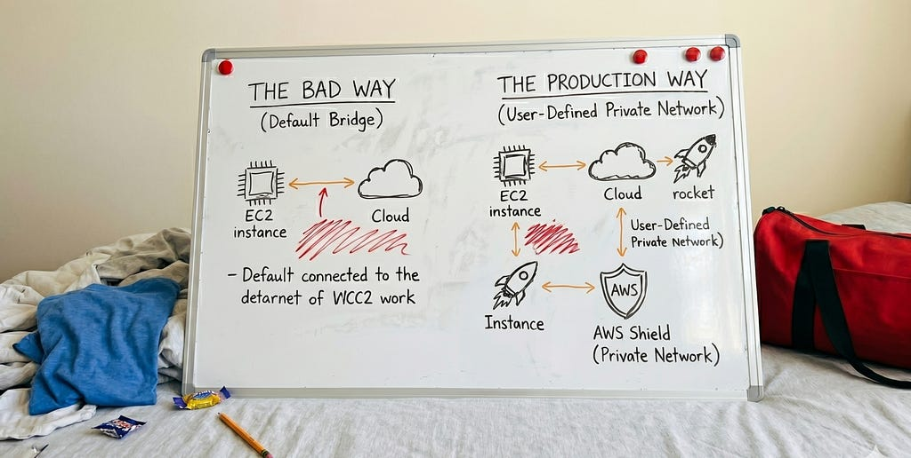

Why Default Container Networks Fail in Production (and How to Fix It)
Contents
When you are first building and testing a containerized application, your primary goal is simple: get the containers to talk to each other. You spin up a backend API container, launch a database container right next to it, and if they can communicate, you check the box and move on.
But things change when you move that architecture to production, especially on a cloud provider like AWS.
Under heavy traffic — like an AI workflow fetching massive vector embeddings or a high-throughput backend querying a database — default setups quickly fall apart. You start seeing intermittent Connection Refused errors, dropped packets, and random timeouts.
Often, engineers blame the application code, the database indexing, or the cloud instance size. In reality, the culprit is much lower down the stack: the default container network.
Let’s look at why relying on default network setups is a performance and security bottleneck, and how to properly isolate your infrastructure for production.
The Root Cause: The Default Bridge Trap
By default, when you run containers without explicitly defining a network, Docker places them on a standard virtual network interface called the default bridge network.
While convenient for a quick local test, running production or data-heavy workloads on a default bridge introduces two massive issues:
1. No Automatic Service Discovery #
On the default bridge network, containers cannot talk to each other using their container names. If your backend container needs to connect to db-container, it cannot resolve that name. You are forced to hardcode internal IP addresses or pass them manually via environment variables. Because container IPs can change every time a container restarts, this is an operational nightmare.
2. A Massive Security Blast Radius #
By design, every container on the default bridge network can communicate with every other container on that same host. Imagine you are running your core database container alongside a public-facing web app and a third-party analytics tool on the same AWS EC2 instance. If a vulnerability allows an attacker to compromise the web app or the analytics tool, they instantly have a direct, unhindered network path straight to your isolated database.
The Production Blueprint: User-Defined Isolated Networks #
To fix this, you must migrate your architecture to User-Defined Networks.
Creating a dedicated, private network fabric gives you two immediate advantages:
- Automatic Service Discovery (Embedded DNS): Containers can instantly find each other using just their assigned names (e.g., http://backend-api:8080). No hardcoded IPs required.
- Network Isolation by Default: Only containers explicitly attached to this network can talk to each other. A compromised container on a different network cannot even see that your database exists.
Here is exactly how to implement this pattern cleanly.
Step 1: Create a Dedicated Private Network #
Instead of letting your containers pool into the default space, create an isolated bridge network specifically for your application tier.
docker network create --driver bridge app-isolated-netStep 2: Launch the Database in Isolation #
Launch your database container and attach it strictly to the private network. Notice that we do not expose the database ports (-p 5432:5432) to the public host. It remains entirely hidden from the outside world.
docker run -d \
--name production-db \
--network app-isolated-net \
-e POSTGRES_PASSWORD=your_secure_password \
postgres:15Step 3: Launch the Backend Connected to the Same Fabric #
Now, launch your backend API container on the exact same network. Because they share the same virtual fabric, the backend can reach the database securely using the hostname production-db.
docker run -d \
--name backend-api \
--network app-isolated-net \
-p 8080:8080 \
my-backend-image:latestTaking It to the Cloud: Production Multi-Host Architecture on AWS #
While the commands above work beautifully on a single EC2 instance, production environments typically scale across multiple hosts or use managed container orchestrators like AWS ECS (Elastic Container Service) or EKS (Elastic Kubernetes Service).
When moving this concept to AWS, the same principles of isolation apply, but they transition from local virtual bridges to cloud native networking constructs.
1. The awsvpc Network Mode (AWS ECS) #
If you are deploying containerized applications on AWS ECS (whether on EC2 or AWS Fargate), avoid the default bridge or host network modes. Instead, explicitly use the awsvpc network mode.
- How it works: Every single container task gets its own dedicated Elastic Network Interface (ENI) and its own private IP address directly from your AWS VPC subnet.
- Why it matters: Your containers are no longer sharing a single host network link. They become first-class citizens inside your AWS infrastructure.
2. Micro-Segmentation via AWS Security Groups #
Because every container task has its own ENI in awsvpc mode, you can attach AWS Security Groups directly to individual containers.
Instead of configuring firewall rules at the massive EC2 instance level, you can write granular, zero-trust rules:
- Your Backend Container Security Group allows traffic from the internet/Application Load Balancer on port 8080.
- Your Database Container Security Group blocks all inbound traffic, except for explicit TCP requests coming from the Backend Container Security Group on port 5432.
Even if your containers are physically running on the same underlying AWS hardware cluster, the network traffic is completely segmented, monitored, and secure.
Final Thoughts #
Infrastructure performance bottlenecks are rarely just about CPU and RAM. When scaling heavy systems — especially modern architectures processing rapid AI data streams or high-volume backend transactions — low-level network configuration determines your stability.
Stop letting your deployments fall back on default virtual bridges. Isolate your environments, leverage embedded DNS, and enforce strict security boundaries both locally and in your AWS cloud environments. Your production uptime will thank you.
Originally published on Medium.